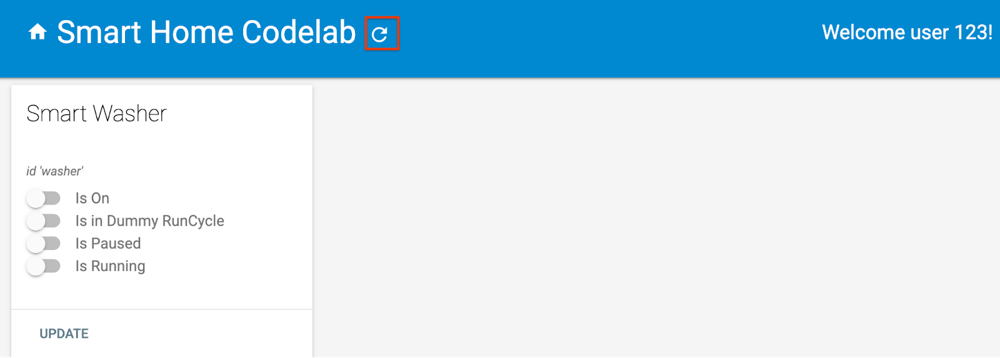
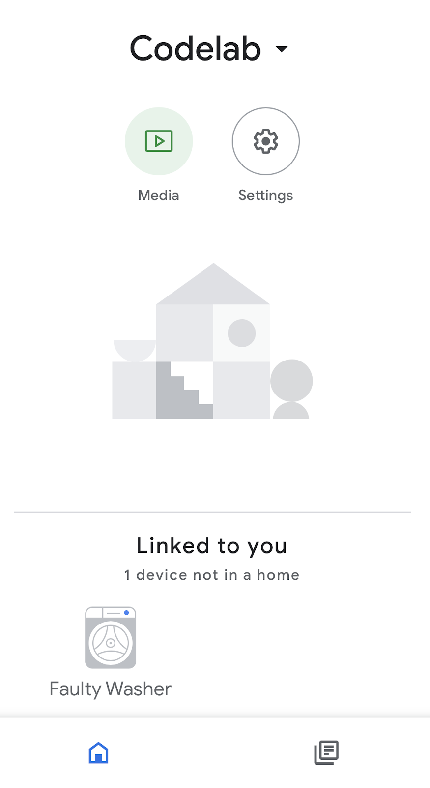
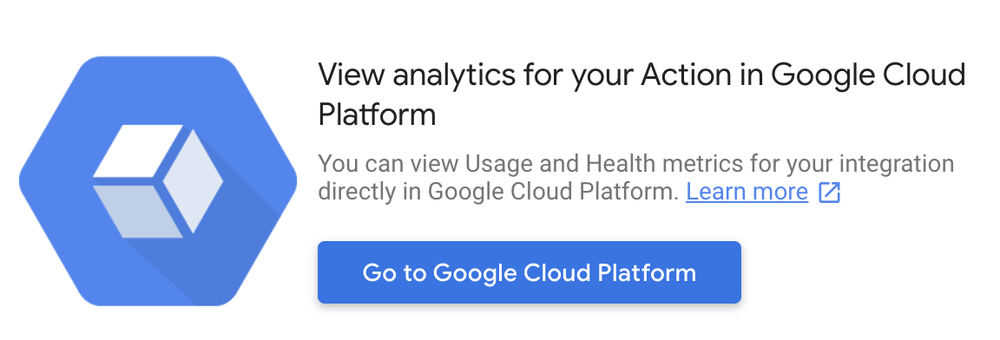
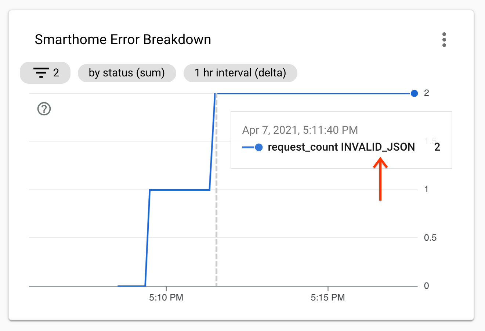
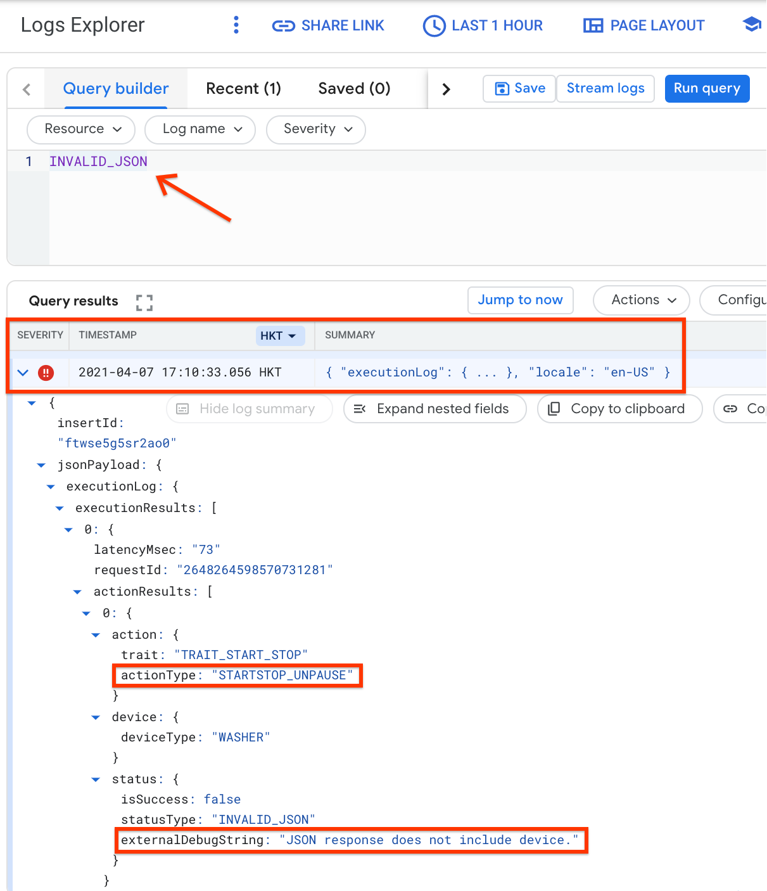
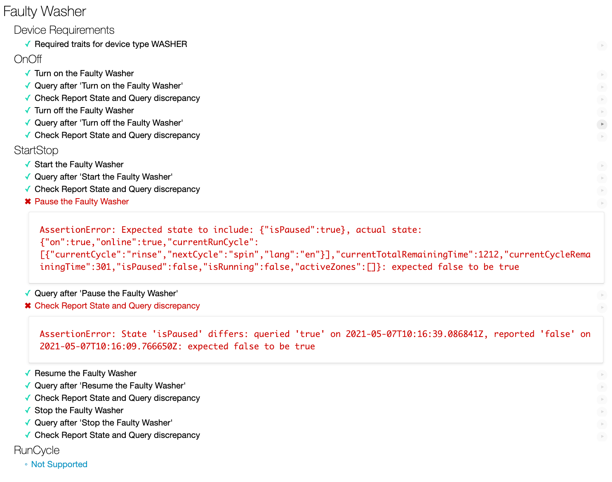
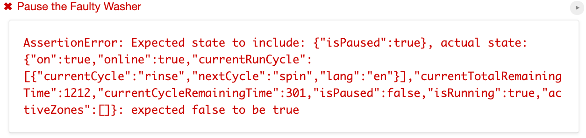
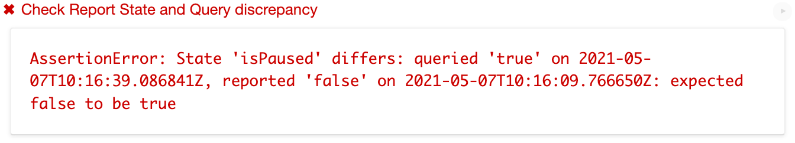
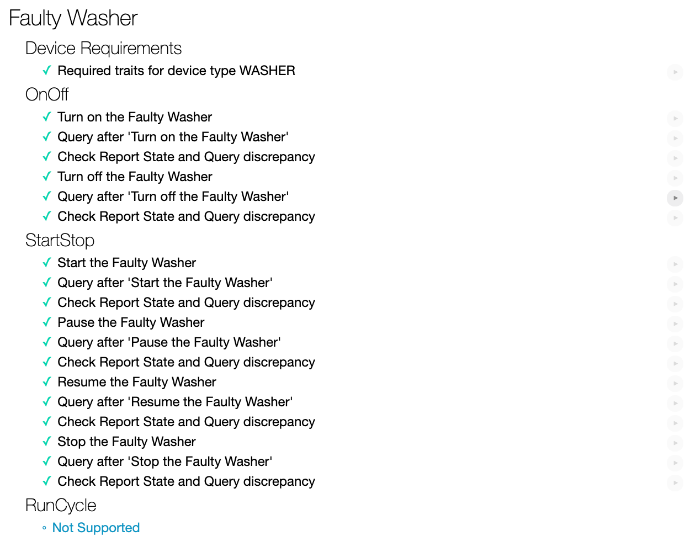
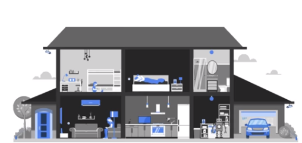

モノのインターネット (IoT) の開発者は、ユーザーが Google Home アプリのタッチコントロールと Google アシスタントの音声コマンドでデバイスを制御できる スマートホームアクション を構築できます。
スマート ホーム アクションのデバッグ ツールを学習することは、Google アシスタントとの製品品質の統合を構築するための重要なステップです。モニタリングとデバッグを容易にするために、 Google Cloud Platform (GCP) Metrics and Logging および Test Suite for smart home を利用して、アクションの問題を特定して解決することができます。
このコードラボでは、2 つの欠陥があるスマート ホーム アクションをデプロイしてアシスタントに接続し、スマート ホームと Google Cloud Platform (GCP) のメトリックとロギングのテスト スイートを介してアクションの欠陥をデバッグします。
次のリンクをクリックして、開発マシンにこのコードラボのサンプルをダウンロードします。
または、コマンドラインからGitHubリポジトリをcloneすることができます。
$ git clone https://github.com/googlecodelabs/smarthome-debug.git
ウォッシャーアプリは以下のサブディレクトリを含んでいます。
public: スマート ウォッシャーの状態を簡単に制御および監視するためのフロントエンド UI。functions: Cloud Functions for Firebase および Firebase Realtime Database を使用してスマート ウォッシャーを管理する完全に実装されたクラウド サービス。開発マシンでターミナルを開きます。 washer-faulty ディレクトリに移動し、 Connect smart home devices to the Google Assistant コードラボ にて構築されたアクション プロジェクトで Firebase CLI を設定します。
$ cd washer-faulty $ firebase use <project-id>
functions フォルダーに移動し、npm を使用して必要なすべての依存関係をインストールします。
$ cd functions $ npm install
Note: 以下のメッセージが表示された場合は、無視して続行できます。この警告は、一部の古い依存関係が原因であり、詳細は こちら で確認できます。
found 5 high severity vulnerabilities run `npm audit fix` to fix them, or `npm audit` for details
依存関係をインストールしてプロジェクトを構成したので、障害のあるウォッシャー アプリをデプロイする準備が整いました。
$ firebase deploy
これは、表示されるコンソール出力です。
... ✔ Deploy complete! Project Console: https://console.firebase.google.com/project/<project-id>/overview Hosting URL: https://<project-id>.firebaseapp.com
Web アプリを表示するには、ブラウザで Hosting URL を開きます ( https:// ) 。 Web UI で Refresh ボタンをクリックして、障害のある洗濯機アプリからの最新のデバイス メタデータで、 Request Sync を介して HomeGraph を更新します。

Google Homeアプリを開いて、Faulty Washer という名前でウォッシャーデバイスを見ることができるかどうか確認してください。

プロジェクトをデプロイした後、アクションがウォッシャーを制御することをテストします。
"Hey Google, turn on my washer."
"Hey Google, start my washer."
"Hey Google, pause my washer."
"Hey Google, resume my washer."
"Hey Google, stop my washer."
洗濯機を一時停止/再開すると、アシスタントが音声で何か問題があると応答します。
"Sorry, I couldn't reach <project display name>."
この問題をデバッグするには、まずエラーに関する詳細情報を絞り込み、根本原因を特定する必要があります。
エラーを検査するのに適した場所は、クラウド フルフィルメントの Usage and Health metrics のグラフを集約する Smarthome Analytics ダッシュボード です。
エラーの原因を絞り込むには、ダッシュボードの error breakdown チャートでエラーの手がかりを確認してください。
まず、次の手順に従ってプロジェクトのダッシュボードにアクセスします。

Smarthome Error Breakdown グラフ (上から 4 行目の左側) を含む複数のグラフが表示され、失敗した要求の数とそれぞれのエラー コードが示されます。

INVALID_JSON エラー コードは、根本原因へのヒントを提供します。次に、詳細について、エラー コードに基づいてイベント ログを取得します。
エラーの詳細を取得するには、Cloud Logging を介してスマート ホーム アクションのイベント ログにアクセスします。
Google Cloud Platform でナビゲーション メニューを開きます。 Operations で Logging > Logs Explorer を選択してプロジェクトの Cloud Logging にアクセスし、クエリ INVALID_JSON を実行して関連するイベント ログを取得します。最新のエラー ログを見つける必要があります。

エラー ログはスマート ホーム イベントであり、 エラーの詳細 は次のように示されます。
actionType: "STARTSTOP_UNPAUSE" ) です。JSON response does not include device." です。デバッグ メッセージに基づいて、洗濯機アプリが EXECUTE 応答に正しいデバイスを含めない理由を確認する必要があります。
functions/index.js で、各コマンドのステータスと新しいデバイスの状態を返す EXECUTE ハンドラー (onExecute 配列内) を見つけます。 EXECUTE 応答へのデバイス ID の挿入は、 updateDevice 関数の解決に依存します。
app.onExecute(async (body) => {
...
for (const command of intent.payload.commands) {
for (const device of command.devices) {
for (const execution of command.execution) {
executePromises.push(
updateDevice(execution, device.id)
.then((data) => {
result.ids.push(device.id);
Object.assign(result.states, data);
})
.catch((e) =>
functions.logger.error('EXECUTE',
device.id, e.message)));
}
}
}updateDevice 関数がウォッシャーで一時停止/再開を処理する方法をさらに確認すると、 pause / resume コマンド に一致する文字列が正しくないことがわかります。
const updateDevice = async (execution, deviceId) => {
const {params, command} = execution;
let state; let ref;
switch (command) {
...
case 'action.devices.commands.PauseUnpausePause':
state = {isPaused: params.pause};
if (params.pause) state.isRunning = false;
ref = firebaseRef.child(deviceId).child('StartStop');
break;
}
return ref.update(state)
.then(() => state);
};エラーの根本原因を特定したので、一時停止/再開コマンドの文字列を修正できます。
const updateDevice = async (execution, deviceId) => {
const {params, command} = execution;
let state; let ref;
switch (command) {
...
case 'action.devices.commands.PauseUnpause':
state = {isPaused: params.pause};
if (params.pause) state.isRunning = false;
ref = firebaseRef.child(deviceId).child('StartStop');
break;
}
return ref.update(state)
.then(() => state);
};Firebase CLIを使って、更新されたコードをデプロイします。
firebase deploy --only functions
次の音声コマンドを再試行すると、洗濯機を一時停止/再開したときにアシスタントが正しく応答することがわかります。
"Hey Google, pause my washer."
=>
"Sure, pausing the washer."
"Hey Google, resume my washer."
=>
"Got it, resuming the washer."
You can also test the current state of your washer by asking questions.
"Hey Google, is my washer on?"
"Hey Google, is my washer running?"
"Hey Google, what cycle is my washer on?"
手動でのテストに加えて、 スマートホーム向けのテストスイート を使用して、アクションに関連付けられたデバイス タイプとトレイトに基づいてユース ケースを検証できます。テスト スイートは一連のテストを実行してアクションの問題を検出し、失敗したテスト ケースの情報メッセージを表示して、イベント ログに飛び込む前にデバッグを促進します。
テストスイートによるスマートホームアクションのテストは、これらの指示に従います。
テスト スイートの実行が完了したら、テスト ケースの結果を表示します。失敗した 2 つのテスト ケースがそれぞれのエラー メッセージでキャッチされていることに気付くでしょう。

エラーのスマート ホーム アクションをデバッグするには、最初にエラー メッセージを分析して、エラーの根本原因を特定する必要があります。
開発者が根本原因を特定できるようにするために、Test Suite は失敗した各テスト ケースのエラー メッセージを表示し、失敗の理由を示します。
上記の最初の失敗したテスト ケースでは、

エラー メッセージは、テスト スイートがスマート ホーム アクションから報告された状態で "isPause": true を期待していることを示していますが、実際の状態には "isPause": false のみが含まれます。
さらに、2 番目に失敗したテスト ケースのエラー メッセージは、スマート ホーム アクションからの QUERY 応答の状態が "isPause": true であることを示しています。これは、スマート ホーム アクションから報告された状態の "isPause": false とは異なります。

両方のエラー メッセージに従って、アクションが isPaused の状態が正しい値で報告されているかどうかを確認する必要があります。
functions/index.js を開きます。この関数には、レポートの状態を介して状態の変更をホーム グラフに送信する reportstate 関数が含まれています。 Report State ペイロードを調べると、ペイロードに isPaused 状態が欠落していることがわかります。これは、失敗したテスト ケースでテスト スイートがチェックしたのとまったく同じです。
exports.reportstate = functions.database.ref('{deviceId}').onWrite(
async (change, context) => {
...
const requestBody = {
requestId: 'ff36a3cc', /* Any unique ID */
agentUserId: USER_ID,
payload: {
devices: {
states: {
/* Report the current state of our washer */
[context.params.deviceId]: {
online: true,
on: snapshot.OnOff.on,
isRunning: snapshot.StartStop.isRunning,
currentRunCycle: [{
currentCycle: 'rinse',
nextCycle: 'spin',
lang: 'en',
}],
currentTotalRemainingTime: 1212,
currentCycleRemainingTime: 301,
},
},
},
},
};
const res = await homegraph.devices.reportStateAndNotification({
requestBody,
});
...
});エラーの根本原因を特定したので、isPaused 状態を Report State ペイロードに追加して functions/index.js を修正します。
exports.reportstate = functions.database.ref('{deviceId}').onWrite(
async (change, context) => {
...
const requestBody = {
requestId: 'ff36a3cc', /* Any unique ID */
agentUserId: USER_ID,
payload: {
devices: {
states: {
/* Report the current state of our washer */
[context.params.deviceId]: {
online: true,
on: snapshot.OnOff.on,
isPaused: snapshot.StartStop.isPaused,
isRunning: snapshot.StartStop.isRunning,
currentRunCycle: [{
currentCycle: 'rinse',
nextCycle: 'spin',
lang: 'en',
}],
currentTotalRemainingTime: 1212,
currentCycleRemainingTime: 301,
},
},
},
},
};
...
});Firebase CLIを使って、更新されたコードをデプロイします。
$ firebase deploy --only functions
スマート ホームのテスト スイートを再実行すると、すべてのテスト ケースに合格したことがわかります。


おめでとう！テスト スイートを介してスマート ホーム アクションの問題をトラブルシューティングする方法を学習しました。
この Codelab を構築して、次の演習を試して、追加のリソースを調べてください。
また、アクションをユーザーに公開するための認証プロセスなど、レビューのためにアクションを テストして提出する 方法についても学ぶことができます。